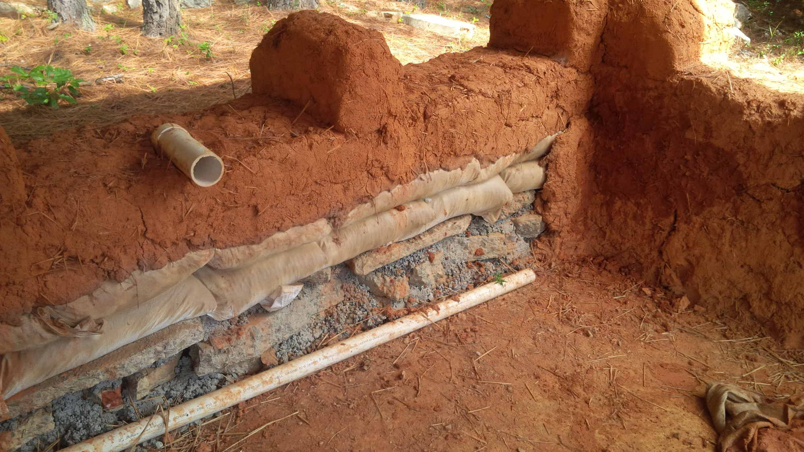
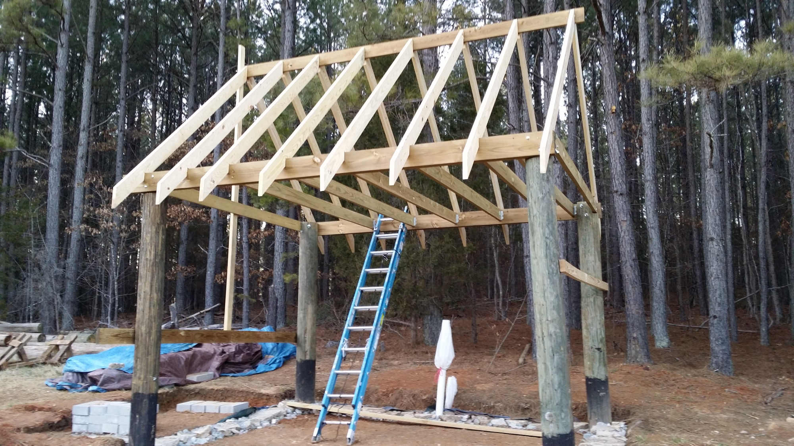

A New Home
The idea started a long time ago.

At first, it was just a cool concept.
But the more I thought about it, the more realistic it seemed it could be. Then again, I was only in high school. I wanted to build my own house. Maybe it was just a crazy dream, though. So, I continued to dream, but didn't actually do anything. Gradually, however, the pieces seemed to start fitting together. I met the woman who would later become my wife. And, unexpectedly, there was actually another person who thought it would be cool to live in a tiny mud house when we got married. I embarked on a journey that challenged me in many ways, but has shown me what it takes to do something significant and new in world where it is so easy to get caught up in the mundane and normal.
Restarting the Conversation
But my story is only part of it. Cob is a building style that has been around for millennia. Mankind has long needed to provide its own shelter, and has used whatever resources made sense for the area. This is where modern society has departed from the sensible. Today, when someone decides to build a home, they think about what styles they like, what colors match their ideal palette, and how they want to be seen by others. Then they send the idea off to someone who will build a home to their liking. Or, they simply drive down enough suburban streets that they are able to find a house that someone else has already built to their liking. We've cut off our conversation with the land about how it influences our dwelling.
Now, before you dismiss me as one of those "crazy, talk-to-the-earth people," think about what this really means to society. We now live in homes that work against nature. And what happens when you work against something that is greatly stronger than you? More often than not, that force prevails. If we're going to build a society that has a lasting impact on the world, and one which stewards the world instead of using it up, we need a change.
A better kind of house starts with the inhabitants.
Just like those who, thousands of years ago, made their dwellings out of the resources at hand (because those were the only ones they had access to); we, too, should first consider where we want to live, and what that space has to offer. One can build a house almost anywhere, but before making the decision to build there, consider the actual climate. You might love the cooler temperatures in the summer, but if the winter winds and snows will keep you house-bound for seven months of the year, then maybe that isn't the place for you. Additionally, if there really are no resources for building a home (no stone, clay, lumber, etc.), then maybe there's a better situation somewhere else. Before you even consider buying a home, consider yourself and your needs.
The journey to a better kind of house starts with us. We first have to know what we want. After we've established reasonable expectations, we have to consider what place meets those expectations. Don't fall into the trap of simply settling for a pretty place. Find a home you fall in love with. If you can't find it, look around you! Determine the resources the place you love offers, and make your own house. When we open up the possibilities to dream big, we'll find that there is little that will really hold us back!
A few more pictures...
Here are some of the other steps along the way to building a house out of earth and straw. It's a pretty involved process. Check it out!


{kind=link}
Learn more about what I do
Follow Me
© Modern Renaissance